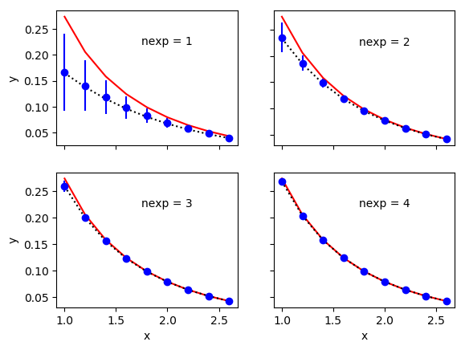

Overview and Tutorial¶
Introduction¶
The lsqfit module is designed to facilitate least-squares fitting of
noisy data by multi-dimensional, nonlinear functions of arbitrarily many
parameters, each with a (Bayesian) prior. lsqfit makes heavy use of
another module, gvar (distributed separately), which provides tools
that simplify the analysis of error propagation, and also the creation of
complicated multi-dimensional Gaussian distributions.
This technology also allows lsqfit
to calculate exact derivatives of fit functions from the fit functions
themselves, using automatic differentiation, thereby avoiding the need to
code these by hand (the fitters use the derivatives).
The power of the
gvar module, particularly for correlated distributions, enables
a variety of unusual fitting strategies, as we illustrate below;
it is a feature that distinguishes lsqfit from
standard fitting packages.
The following (complete) code illustrates basic usage of lsqfit:
import numpy as np
import gvar as gv
import lsqfit
y = { # data for the dependent variable
'data1' : gv.gvar([1.376, 2.010], [[ 0.0047, 0.01], [ 0.01, 0.056]]),
'data2' : gv.gvar([1.329, 1.582], [[ 0.0047, 0.0067], [0.0067, 0.0136]]),
'b/a' : gv.gvar(2.0, 0.5)
}
x = { # independent variable
'data1' : np.array([0.1, 1.0]),
'data2' : np.array([0.1, 0.5])
}
prior = {}
prior['a'] = gv.gvar(0.5, 0.5)
prior['b'] = gv.gvar(0.5, 0.5)
def fcn(x, p): # fit function of x and parameters p
ans = {}
for k in ['data1', 'data2']:
ans[k] = gv.exp(p['a'] + x[k] * p['b'])
ans['b/a'] = p['b'] / p['a']
return ans
# do the fit
fit = lsqfit.nonlinear_fit(data=(x, y), prior=prior, fcn=fcn, debug=True)
print(fit.format(maxline=True)) # print standard summary of fit
p = fit.p # best-fit values for parameters
outputs = dict(a=p['a'], b=p['b'])
outputs['b/a'] = p['b']/p['a']
inputs = dict(y=y, prior=prior)
print(gv.fmt_values(outputs)) # tabulate outputs
print(gv.fmt_errorbudget(outputs, inputs)) # print error budget for outputs
This code fits the function f(x,a,b)= exp(a+b*x) (see fcn(x,p))
to two sets of data, labeled data1 and data2, by varying parameters
a and b until f(x['data1'],a,b) and f(x['data2'],a,b)
equal y['data1'] and y['data2'], respectively, to within the
ys’ errors.
The means and covariance matrices for the ys are
specified in the gv.gvar(...)s used to create them: thus, for example,
>>> print(y['data1'])
[1.376(69) 2.01(24)]
>>> print(y['data1'][0].mean, "+-", y['data1'][0].sdev)
1.376 +- 0.068556546004
>>> print(gv.evalcov(y['data1'])) # covariance matrix
[[ 0.0047 0.01 ]
[ 0.01 0.056 ]]
shows the means, standard deviations and covariance matrix for the data in the first data set (0.0685565 is the square root of the 0.0047 in the covariance matrix).
The dictionary prior gives a priori estimates
for the two parameters, a and b: each is assumed to be 0.5±0.5
before fitting. The parameters p[k] in the fit function fcn(x, p)
are stored in a dictionary having the same keys and layout as
prior (since prior specifies the fit parameters for
the fitter).
In addition to the data1 and data2 data sets,
there is an extra piece of input data,
y['b/a'], which indicates that b/a is 2±0.5. The fit
function for this data is simply the ratio b/a (represented by
p['b']/p['a'] in fit function fcn(x,p)). The fit function returns
a dictionary having the same keys and layout as the input data y.
The output from the code sample above is:
Least Square Fit:
chi2/dof [dof] = 0.17 [5] Q = 0.97 logGBF = 0.65538
Parameters:
a 0.253 (32) [ 0.50 (50) ]
b 0.449 (65) [ 0.50 (50) ]
Fit:
key y[key] f(p)[key]
---------------------------------------
b/a 2.00 (50) 1.78 (30)
data1 0 1.376 (69) 1.347 (46)
1 2.01 (24) 2.02 (16)
data2 0 1.329 (69) 1.347 (46)
1 1.58 (12) 1.612 (82)
Settings:
svdcut/n = 1e-12/0 tol = (1e-08*,1e-10,1e-10) (itns/time = 8/0.0)
Values:
a: 0.253(32)
b/a: 1.78(30)
b: 0.449(65)
Partial % Errors:
a b/a b
----------------------------------------
y: 12.75 16.72 14.30
prior: 0.92 1.58 1.88
----------------------------------------
total: 12.78 16.80 14.42
The best-fit values for a and b are 0.253(32) and
0.449(65), respectively; and the best-fit result for b/a is
1.78(30), which, because of correlations, is slightly more accurate
than might be expected from the separate errors for a and b. The
error budget for each of these three quantities is tabulated at the end and
shows that the bulk of the error in each case comes from uncertainties in
the y data, with only small contributions from uncertainties in the
priors prior. The fit results corresponding to each piece of input data
are also tabulated (Fit: ...); the agreement is excellent, as expected
given that the chi**2 per degree of freedom is only 0.17.
Note that the constraint in y on b/a in this example is much tighter
than the constraints on a and b separately. This suggests a variation
on the previous code, where the tight restriction on b/a is built into the
prior rather than y:
... as before ...
y = { # data for the dependent variable
'data1' : gv.gvar([1.376, 2.010], [[ 0.0047, 0.01], [ 0.01, 0.056]]),
'data2' : gv.gvar([1.329, 1.582], [[ 0.0047, 0.0067], [0.0067, 0.0136]])
}
x = { # independent variable
'data1' : np.array([0.1, 1.0]),
'data2' : np.array([0.1, 0.5])
}
prior = {}
prior['a'] = gv.gvar(0.5, 0.5)
prior['b'] = prior['a'] * gv.gvar(2.0, 0.5)
def fcn(x, p): # fit function of x and parameters p[k]
ans = {}
for k in ['data1', 'data2']:
ans[k] = gv.exp(p['a'] + x[k]*p['b'])
return ans
... as before ...
Here the dependent data y no longer has an entry for b/a, and neither
do results from the fit function; but the prior for b is now 2±0.5
times the prior for a, thereby introducing a correlation that
limits the ratio b/a to be 2±0.5 in the fit. This code gives almost
identical results to the first one — very slightly less accurate, since
there is slightly less input data. We can often move information
from the y data to
the prior or back since both are forms of input information.
There are several things worth noting from this example:
The input data (
y) is expressed in terms of Gaussian random variables — quantities with means and a covariance matrix. These are represented by objects of typegvar.GVarin the code; modulegvarhas a variety of tools for creating and manipulating Gaussian random variables (also see below).The input data is stored in a dictionary (
y) whose values can begvar.GVars or arrays ofgvar.GVars. The use of a dictionary allows for far greater flexibility than, say, an array. The fit function (fcn(x, p)) has to return a dictionary with the same layout as that ofy(that is, with the same keys and where the value for each key has the same shape as the corresponding value iny).lsqfitallowsyto be an array instead of a dictionary, which might be preferable for simple fits (but usually not otherwise).The independent data (
x) can be anything; it is simply passed through the fit code to the fit functionfcn(x,p). It can also be omitted altogether, in which case the fit function depends only upon the parameters:fcn(p).The fit parameters (
pinfcn(x,p)) are also stored in a dictionary whose values aregvar.GVars or arrays ofgvar.GVars. Again this allows for great flexibility. The layout of the parameter dictionary is copied from that of the prior (prior). Againpcan be a single array instead of a dictionary, if that simplifies the code.The best-fit values of the fit parameters (
fit.p[k]) are alsogvar.GVars and these capture statistical correlations between different parameters that are indicated by the fit. These output parameters can be combined in arithmetic expressions, using standard operators and standard functions, to obtain derived quantities. These operations take account of and track statistical correlations.Function
gvar.fmt_errorbudget()is a useful tool for assessing the origins (inputs) of the statistical errors obtained in various final results (outputs). It is particularly useful for analyzing the impact of the a priori uncertainties encoded in the prior (prior).Parameter
debug=Trueis set inlsqfit.nonlinear_fit. This is a good idea, particularly in the early stages of a project, because it causes the code to check for various common errors and give more intelligible error messages than would otherwise arise. This parameter can be dropped once code development is over.The priors for the fit parameters specify Gaussian distributions, characterized by the means and standard deviations given
gv.gvar(...). Some other distributions become available if argumentextend=Trueis included in the call tolsqfit.nonlinear_fit. The distribution for parametera, for example, can then be switched to a log-normal distribution by replacingprior['a']=gv.gvar(0.5, 0.5)with:prior['log(a)'] = gv.log(gv.gvar(0.5,0.5))in the code. This change would be desirable if we knew a priori that parameter
ais positive since this is guaranteed with a log-normal distribution. Only the prior need be changed. (In particular, the fit functionfcn(x,p)need not be changed.)
What follows is a tutorial that demonstrates in greater detail how to use these modules in a selection of variations on the data fitting problem. As above, code for the examples is specified completely (with one exception) and so can be copied into a file, and run as is. It can also be modified, allowing for experimentation.
Another way to learn about the modules is to examine the case studies that follow this section. Each focuses on a single problem, again with the full code and data to allow for experimentation.
About Printing: The examples in this tutorial use the print function
as it is used in Python 3. Drop the outermost parenthesis in each print
statement if using Python 2; or add
from __future__ import print_function
at the start of your file.
Gaussian Random Variables and Error Propagation¶
The inputs and outputs of a nonlinear least squares analysis are probability
distributions, and these distributions will be Gaussian provided the input
data are sufficiently accurate. lsqfit assumes this to be the case.
(It also provides tests for non-Gaussian behavior, together with
methods for dealing with such behavior. See: Non-Gaussian Behavior; Testing Fits.)
One of the most distinctive features of lsqfit is that it is
built around a class, gvar.GVar, of objects that can be used to
represent arbitrarily complicated Gaussian distributions
— that is, they represent Gaussian random variables that specify the means and
covariance matrix of the probability distributions.
The input data for a fit are represented
by a collection of gvar.GVars that specify both the values and possible
errors in the input values. The result of a fit is a collection of
gvar.GVars specifying the best-fit values for the fit parameters and the
estimated uncertainties in those values.
gvar.GVars are defined in the gvar module.
There are five important things to know about them (see the
gvar documentation for more details):
gvar.GVars are created bygvar.gvar(), individually or in groups: for example,>>> import gvar as gv >>> print(gv.gvar(1.0, 0.1), gv.gvar('1.0 +- 0.2'), gv.gvar('1.0(4)')) 1.00(10) 1.00(20) 1.00(40) >>> print(gv.gvar([1.0, 1.0, 1.0], [0.1, 0.2, 0.41])) [1.00(10) 1.00(20) 1.00(41)] >>> print(gv.gvar(['1.0(1)', '1.0(2)', '1.00(41)'])) [1.00(10) 1.00(20) 1.00(41)] >>> print(gv.gvar(dict(a='1.0(1)', b=['1.0(2)', '1.0(4)']))) {'a': 1.00(10),'b': array([1.00(20), 1.00(40)], dtype=object)}
gvaruses the compact notation 1.234(22) to represent 1.234±0.022 — the digits in parentheses indicate the uncertainty in the rightmost corresponding digits quoted for the mean value. Very large (or small) numbers use a notation like 1.234(22)e+10.
gvar.GVars describe not only means and standard deviations, but also statistical correlations between different objects. For example, thegvar.GVars created by>>> import gvar as gv >>> a, b = gv.gvar([1, 1], [[0.01, 0.01], [0.01, 0.010001]]) >>> print(a, b) 1.00(10) 1.00(10)both have means of
1and standard deviations equal to or very close to0.1, but the ratiob/ahas a standard deviation that is 100x smaller:>>> print(b / a) 1.0000(10)This is because the covariance matrix specified for
aandbwhen they were created has large, positive off-diagonal elements:>>> print(gv.evalcov([a, b])) # covariance matrix [[ 0.01 0.01 ] [ 0.01 0.010001]]These off-diagonal elements imply that
aandbare strongly correlated, which means thatb/aorb-awill have much smaller uncertainties thanaorbseparately. The correlation coefficient foraandbis 0.99995:>>> print(gv.evalcorr([a, b])) # correlation matrix [[ 1. 0.99995] [ 0.99995 1. ]]
gvar.GVars can be used in arithmetic expressions or as arguments to pure-Python functions. The results are alsogvar.GVars. Covariances are propagated through these expressions following the usual rules, (automatically) preserving information about correlations. For example, thegvar.GVarsaandbabove could have been created using the following code:>>> import gvar as gv >>> a = gv.gvar(1, 0.1) >>> b = a + gv.gvar(0, 0.001) >>> print(a, b) 1.00(10) 1.00(10) >>> print(b / a) 1.0000(10) >>> print(gv.evalcov([a, b])) [[ 0.01 0.01 ] [ 0.01 0.010001]]The correlation is obvious from this code:
bis equal toaplus a very small correction. From these variables we can create new variables that are also highly correlated:>>> x = gv.log(1 + a ** 2) >>> y = b * gv.cosh(a / 2) >>> print(x, y, y / x) 0.69(10) 1.13(14) 1.627(34) >>> print gv.evalcov([x, y]) [[ 0.01 0.01388174] [ 0.01388174 0.01927153]]The
gvarmodule defines versions of the standard Python functions (sin,cos, …) that work withgvar.GVars. Most any numeric pure-Python function will work with them as well. Numeric functions that are compiled in C or other low-level languages generally do not work withgvar.GVars; they should be replaced by equivalent pure-Python functions if they are needed forgvar.GVar-valued arguments. See thegvardocumentation for more information.The fact that correlation information is preserved automatically through arbitrarily complicated arithmetic is what makes
gvar.GVars particularly useful. This is accomplished using automatic differentiation to compute the derivatives of any derivedgvar.GVarwith respect to the primarygvar.GVars (those defined usinggvar.gvar()) from which it was created. As a result, for example, we need not provide derivatives of fit functions forlsqfit(which are needed for the fit) since they are computed implicitly by the fitter from the fit function itself. Also it becomes trivial to build correlations into the priors used in fits, and to analyze the propagation of errors through complicated functions of the parameters after the fit.The uncertainties in derived
gvar.GVars come from the uncertainties in the primarygvar.GVars from which they were created. It is easy to create an “error budget” that decomposes the uncertainty in a derivedgvar.GVarinto components coming from each of the primarygvar.GVars involved in its creation. For example,>>> import gvar as gv >>> a = gv.gvar('1.0(1)') >>> b = gv.gvar('0.9(2)') >>> x = gv.log(1 + a ** 2) >>> y = b * gv.cosh(a / 2) >>> outputs = dict(x=x, y=y) >>> print(gv.fmt_values(outputs)) Values: y: 1.01(23) x: 0.69(10) >>> inputs = dict(a=a, b=b) >>> print(gv.fmt_errorbudget(outputs=outputs, inputs=inputs)) Partial % Errors: y x ------------------------------ a: 2.31 14.43 b: 22.22 0.00 ------------------------------ total: 22.34 14.43The error budget shows that most of
y’s 22.34% uncertainty comes fromb, with just 2.3% coming froma. The total uncertainty is the sum in quadrature of the two separate uncertainties. The uncertainty inxis entirely froma, of course.Storing
gvar.GVars in a file for later use is somewhat complicated because one generally wants to hold onto their correlations as well as their mean values and standard deviations. One easy way to do this is to put all of thegvar.GVars to be saved into a single array or dictionary that is saved using functiongvar.dump(): for example, use>>> gv.dump([a, b, x, y], 'outputfile.p')to save the variables defined above in a file named
'outputfile.p'. Loading the file into a Python code later, withgvar.load(), recovers the array with standard deviations and correlations intact:>>> a,b,x,y = gv.load('outputfile.p') >>> print(a, b, x, y) 1.00(10) 0.90(20) 0.69(10) 1.01(23) >>> print(y / b, gv.sqrt(gv.exp(x) - 1) / a) 1.128(26) 1(0)This recipe works with arrays of any shape, and also with dictionaries whose values are either
gvar.GVars or arrays ofgvar.GVars. In particular, the best-fit values for the fit parameters from a fit can be saved using something likegv.dump(fit.p, 'fitparam.p').
There is considerably more information about gvar.GVars in the documentation for
module gvar.
Basic Fits¶
A fit analysis typically requires three types of input:
- fit data
x,y(or possibly justy); - a function
y = f(x,p)relating values ofyto to values ofxand a set of fit parametersp; if there is nox, theny = f(p); - some a priori idea about the fit parameters’ values (possibly quite imprecise — for example, that a particular parameter is of order 1).
The point of
the fit is to improve our knowledge of the parameter values, beyond
our a priori impressions, by analyzing the fit data. We now show how
to do this using the lsqfit module for a more realistic
problem, one that is
familiar from numerical simulations of quantum chromodynamics (QCD).
We need code for each of the three fit inputs. The fit data in our example is assembled by the following function:
import numpy as np
import gvar as gv
def make_data():
x = np.array([ 5., 6., 7., 8., 9., 10., 12., 14.])
ymean = np.array(
[ 4.5022829417e-03, 1.8170543788e-03, 7.3618847843e-04,
2.9872730036e-04, 1.2128831367e-04, 4.9256559129e-05,
8.1263644483e-06, 1.3415253536e-06]
)
ycov = np.array(
[[ 2.1537808808e-09, 8.8161794696e-10, 3.6237356558e-10,
1.4921344875e-10, 6.1492842463e-11, 2.5353714617e-11,
4.3137593878e-12, 7.3465498888e-13],
[ 8.8161794696e-10, 3.6193461816e-10, 1.4921610813e-10,
6.1633547703e-11, 2.5481570082e-11, 1.0540958082e-11,
1.8059692534e-12, 3.0985581496e-13],
[ 3.6237356558e-10, 1.4921610813e-10, 6.1710468826e-11,
2.5572230776e-11, 1.0608148954e-11, 4.4036448945e-12,
7.6008881270e-13, 1.3146405310e-13],
[ 1.4921344875e-10, 6.1633547703e-11, 2.5572230776e-11,
1.0632830128e-11, 4.4264622187e-12, 1.8443245513e-12,
3.2087725578e-13, 5.5986403288e-14],
[ 6.1492842463e-11, 2.5481570082e-11, 1.0608148954e-11,
4.4264622187e-12, 1.8496194125e-12, 7.7369196122e-13,
1.3576009069e-13, 2.3914810594e-14],
[ 2.5353714617e-11, 1.0540958082e-11, 4.4036448945e-12,
1.8443245513e-12, 7.7369196122e-13, 3.2498644263e-13,
5.7551104112e-14, 1.0244738582e-14],
[ 4.3137593878e-12, 1.8059692534e-12, 7.6008881270e-13,
3.2087725578e-13, 1.3576009069e-13, 5.7551104112e-14,
1.0403917951e-14, 1.8976295583e-15],
[ 7.3465498888e-13, 3.0985581496e-13, 1.3146405310e-13,
5.5986403288e-14, 2.3914810594e-14, 1.0244738582e-14,
1.8976295583e-15, 3.5672355835e-16]]
)
return x, gv.gvar(ymean, ycov)
The function call x,y = make_data() returns eight x[i], and the
corresponding values y[i] that we will fit. The y[i] are gvar.GVars
(Gaussian random variables — see previous section)
built from the mean values in ymean and the covariance matrix ycov, which shows strong correlations:
>>> print(y) # fit data
[0.004502(46) 0.001817(19) 0.0007362(79) ... 1.342(19)e-06]
>>> print(gv.evalcorr(y)) # correlation matrix
[[ 1. 0.99853801 0.99397698 ... 0.83814041]
[ 0.99853801 1. 0.99843828 ... 0.86234032]
[ 0.99397698 0.99843828 1. ... 0.88605708]
...
...
...
[ 0.83814041 0.86234032 0.88605708 ... 1. ]]
These particular data were generated numerically. They come from a function that is a sum of a very large number of decaying exponentials,
a[i] * np.exp(-E[i] * x)
with coefficients a[i] of order 0.5±0.4 and exponents E[i] of
order i+1±0.4. The function was evaluated with a particular set of
parameters a[i] and E[i], and then noise was added to create
this data. Our challenge is to find estimates for the values of the
parameters a[i] and E[i] that were used to create the data.
Next we need code for the fit function. Here we know that a sum of decaying exponentials is appropriate, and therefore we define the following Python function:
import numpy as np
def fcn(x, p): # function used to fit x, y data
a = p['a'] # array of a[i]s
E = p['E'] # array of E[i]s
return sum(ai * np.exp(-Ei * x) for ai, Ei in zip(a, E))
The fit parameters, a[i] and E[i], are stored as arrays in a
dictionary, using labels a and E to access them. These parameters
are varied in the fit to find the best-fit values p=fitp for which
fcn(x,fitp) most closely approximates the ys in our fit data. The
number of exponentials included in the sum is specified implicitly in this
function, by the lengths of the p['a'] and p['E'] arrays. In
principle there are infinitely many exponentials; in practice, given the
finite precision of our data, we will need only a few.
Finally we need to define priors that encapsulate our a priori knowledge
about the fit-parameter values. In practice we almost always have a priori
knowledge about parameters; it is usually impossible to design a fit
function without some sense of the parameter sizes. Given such knowledge
it is important (often essential) to include it in the fit. This is
done by designing priors for the fit, which are probability distributions
for each parameter that describe the a priori uncertainty in that
parameter. As discussed in the previous section, we use objects of type
gvar.GVar to describe (Gaussian) probability distributions.
Here we know that each a[i] is of order
0.5±0.4, while E[i] is of order 1+i±0.4. A prior
that represents this information is built using the following code:
import lsqfit
import gvar as gv
def make_prior(nexp): # make priors for fit parameters
prior = gv.BufferDict() # any dictionary works
prior['a'] = [gv.gvar(0.5, 0.4) for i in range(nexp)]
prior['E'] = [gv.gvar(i+1, 0.4) for i in range(nexp)]
return prior
where nexp is the number of exponential terms that will be used (and
therefore the number of a[i]s and E[i]s). With nexp=3,
for example, we have:
>>> print(prior['a'])
[0.50(40) 0.50(40) 0.50(40)]
>>> print(prior['E'])
[1.00(40), 2.00(40), 3.00(40)]
We habitually
use dictionary-like class gvar.BufferDict for the prior because it
allows us to save the prior in a file if we wish (using Python’s pickle
module).
If saving is unnecessary, gvar.BufferDict can be replaced by
dict() or most any other Python dictionary class.
With fit data, a fit function, and a prior for the fit parameters, we are finally ready to do the fit, which is now easy:
fit = lsqfit.nonlinear_fit(data=(x, y), fcn=f, prior=prior)
Our complete Python program is, therefore:
import lsqfit
import numpy as np
import gvar as gv
def main():
x, y = make_data() # collect fit data
p0 = None # make larger fits go faster (opt.)
for nexp in range(1, 7):
print('************************************* nexp =', nexp)
prior = make_prior(nexp)
fit = lsqfit.nonlinear_fit(data=(x, y), fcn=fcn, prior=prior, p0=p0)
print(fit) # print the fit results
if nexp > 2:
E = fit.p['E'] # best-fit parameters
a = fit.p['a']
print('E1/E0 =', E[1] / E[0], ' E2/E0 =', E[2] / E[0])
print('a1/a0 =', a[1] / a[0], ' a2/a0 =', a[2] / a[0])
if fit.chi2 / fit.dof < 1.:
p0 = fit.pmean # starting point for next fit (opt.)
print()
# error budget analysis
outputs = {
'E1/E0':E[1]/E[0], 'E2/E0':E[2]/E[0],
'a1/a0':a[1]/a[0], 'a2/a0':a[2]/a[0]
}
inputs = {'E':fit.prior['E'], 'a':fit.prior['a'], 'y':y}
print('================= Error Budget Analysis')
print(fit.fmt_values(outputs))
print(fit.fmt_errorbudget(outputs,inputs))
def fcn(x, p): # function used to fit x, y data
a = p['a'] # array of a[i]s
E = p['E'] # array of E[i]s
return sum(ai * np.exp(-Ei * x) for ai, Ei in zip(a, E))
def make_prior(nexp): # make priors for fit parameters
prior = gv.BufferDict() # any dictionary works
prior['a'] = [gv.gvar(0.5, 0.4) for i in range(nexp)]
prior['E'] = [gv.gvar(i+1, 0.4) for i in range(nexp)]
return prior
def make_data(): # assemble fit data
x = np.array([ 5., 6., 7., 8., 9., 10., 12., 14.])
ymean = np.array(
[ 4.5022829417e-03, 1.8170543788e-03, 7.3618847843e-04,
2.9872730036e-04, 1.2128831367e-04, 4.9256559129e-05,
8.1263644483e-06, 1.3415253536e-06]
)
ycov = np.array(
[[ 2.1537808808e-09, 8.8161794696e-10, 3.6237356558e-10,
1.4921344875e-10, 6.1492842463e-11, 2.5353714617e-11,
4.3137593878e-12, 7.3465498888e-13],
[ 8.8161794696e-10, 3.6193461816e-10, 1.4921610813e-10,
6.1633547703e-11, 2.5481570082e-11, 1.0540958082e-11,
1.8059692534e-12, 3.0985581496e-13],
[ 3.6237356558e-10, 1.4921610813e-10, 6.1710468826e-11,
2.5572230776e-11, 1.0608148954e-11, 4.4036448945e-12,
7.6008881270e-13, 1.3146405310e-13],
[ 1.4921344875e-10, 6.1633547703e-11, 2.5572230776e-11,
1.0632830128e-11, 4.4264622187e-12, 1.8443245513e-12,
3.2087725578e-13, 5.5986403288e-14],
[ 6.1492842463e-11, 2.5481570082e-11, 1.0608148954e-11,
4.4264622187e-12, 1.8496194125e-12, 7.7369196122e-13,
1.3576009069e-13, 2.3914810594e-14],
[ 2.5353714617e-11, 1.0540958082e-11, 4.4036448945e-12,
1.8443245513e-12, 7.7369196122e-13, 3.2498644263e-13,
5.7551104112e-14, 1.0244738582e-14],
[ 4.3137593878e-12, 1.8059692534e-12, 7.6008881270e-13,
3.2087725578e-13, 1.3576009069e-13, 5.7551104112e-14,
1.0403917951e-14, 1.8976295583e-15],
[ 7.3465498888e-13, 3.0985581496e-13, 1.3146405310e-13,
5.5986403288e-14, 2.3914810594e-14, 1.0244738582e-14,
1.8976295583e-15, 3.5672355835e-16]]
)
return x, gv.gvar(ymean, ycov)
if __name__ == '__main__':
main()
We are not sure a priori how many exponentials are needed to fit our
data. Consequently
we write our code to try fitting with each of nexp=1,2,3..6 terms.
(The pieces of the code involving p0 are optional; they make the
more complicated fits go about 30 times faster since the output from one
fit is used as the starting point for the next fit — see the discussion
of the p0 parameter for lsqfit.nonlinear_fit.) Running
this code produces the following output, which is reproduced here in some
detail in order to illustrate a variety of features:
************************************* nexp = 1
Least Square Fit:
chi2/dof [dof] = 1.2e+03 [8] Q = 0 logGBF = -4837.2
Parameters:
a 0 0.00735 (59) [ 0.50 (40) ] *
E 0 1.1372 (49) [ 1.00 (40) ]
Settings:
svdcut/n = 1e-12/1 tol = (1e-08*,1e-10,1e-10) (itns/time = 11/0.0)
************************************* nexp = 2
Least Square Fit:
chi2/dof [dof] = 2.2 [8] Q = 0.024 logGBF = 111.69
Parameters:
a 0 0.4024 (40) [ 0.50 (40) ]
1 0.4471 (46) [ 0.50 (40) ]
E 0 0.90104 (51) [ 1.00 (40) ]
1 1.8282 (14) [ 2.00 (40) ]
Settings:
svdcut/n = 1e-12/1 tol = (1e-08*,1e-10,1e-10) (itns/time = 8/0.0)
************************************* nexp = 3
Least Square Fit:
chi2/dof [dof] = 0.63 [8] Q = 0.76 logGBF = 116.29
Parameters:
a 0 0.4019 (40) [ 0.50 (40) ]
1 0.406 (14) [ 0.50 (40) ]
2 0.61 (36) [ 0.50 (40) ]
E 0 0.90039 (54) [ 1.00 (40) ]
1 1.8026 (82) [ 2.00 (40) ]
2 2.83 (19) [ 3.00 (40) ]
Settings:
svdcut/n = 1e-12/1 tol = (1e-08*,1e-10,1e-10) (itns/time = 27/0.0)
E1/E0 = 2.0020(86) E2/E0 = 3.14(21)
a1/a0 = 1.011(32) a2/a0 = 1.52(89)
************************************* nexp = 4
Least Square Fit:
chi2/dof [dof] = 0.63 [8] Q = 0.76 logGBF = 116.3
Parameters:
a 0 0.4019 (40) [ 0.50 (40) ]
1 0.406 (14) [ 0.50 (40) ]
2 0.61 (36) [ 0.50 (40) ]
3 0.50 (40) [ 0.50 (40) ]
E 0 0.90039 (54) [ 1.00 (40) ]
1 1.8026 (82) [ 2.00 (40) ]
2 2.83 (19) [ 3.00 (40) ]
3 4.00 (40) [ 4.00 (40) ]
Settings:
svdcut/n = 1e-12/1 tol = (1e-08*,1e-10,1e-10) (itns/time = 9/0.0)
E1/E0 = 2.0020(86) E2/E0 = 3.14(21)
a1/a0 = 1.011(32) a2/a0 = 1.52(89)
************************************* nexp = 5
Least Square Fit:
chi2/dof [dof] = 0.63 [8] Q = 0.76 logGBF = 116.3
Parameters:
a 0 0.4019 (40) [ 0.50 (40) ]
1 0.406 (14) [ 0.50 (40) ]
2 0.61 (36) [ 0.50 (40) ]
3 0.50 (40) [ 0.50 (40) ]
4 0.50 (40) [ 0.50 (40) ]
E 0 0.90039 (54) [ 1.00 (40) ]
1 1.8026 (82) [ 2.00 (40) ]
2 2.83 (19) [ 3.00 (40) ]
3 4.00 (40) [ 4.00 (40) ]
4 5.00 (40) [ 5.00 (40) ]
Settings:
svdcut/n = 1e-12/1 tol = (1e-08*,1e-10,1e-10) (itns/time = 4/0.0)
E1/E0 = 2.0020(86) E2/E0 = 3.14(21)
a1/a0 = 1.011(32) a2/a0 = 1.52(89)
************************************* nexp = 6
Least Square Fit:
chi2/dof [dof] = 0.63 [8] Q = 0.76 logGBF = 116.3
Parameters:
a 0 0.4019 (40) [ 0.50 (40) ]
1 0.406 (14) [ 0.50 (40) ]
2 0.61 (36) [ 0.50 (40) ]
3 0.50 (40) [ 0.50 (40) ]
4 0.50 (40) [ 0.50 (40) ]
5 0.50 (40) [ 0.50 (40) ]
E 0 0.90039 (54) [ 1.00 (40) ]
1 1.8026 (82) [ 2.00 (40) ]
2 2.83 (19) [ 3.00 (40) ]
3 4.00 (40) [ 4.00 (40) ]
4 5.00 (40) [ 5.00 (40) ]
5 6.00 (40) [ 6.00 (40) ]
Settings:
svdcut/n = 1e-12/1 tol = (1e-08*,1e-10,1e-10) (itns/time = 2/0.0)
E1/E0 = 2.0020(86) E2/E0 = 3.14(21)
a1/a0 = 1.011(32) a2/a0 = 1.52(89)
================= Error Budget Analysis
Values:
E2/E0: 3.14(21)
E1/E0: 2.0020(86)
a2/a0: 1.52(89)
a1/a0: 1.011(32)
Partial % Errors:
E2/E0 E1/E0 a2/a0 a1/a0
--------------------------------------------------
a: 5.47 0.07 52.75 0.82
E: 3.23 0.12 25.36 1.04
y: 2.08 0.40 5.24 2.78
--------------------------------------------------
total: 6.72 0.43 58.78 3.15
There are several things to notice here:
Clearly two exponentials (
nexp=2) are not sufficient. Thechi**2per degree of freedom (chi2/dof) is significantly larger than one. Thechi**2improves substantially fornexp=3exponentials, and there is essentially no change when further exponentials are added.The best-fit values for each parameter are listed for each of the fits, together with the prior values (in brackets, on the right). Values for each
a[i]andE[i]are listed in order, starting at the points indicated by the labelsaandE. Asterisks are printed at the end of the line if the mean best-fit value differs from the prior’s mean by more than one standard deviation (seenexp=1); the number of asterisks, up to a maximum of 5, indicates how many standard deviations the difference is. Differences of one or two standard deviations are not uncommon; larger differences could indicate a problem with the data, prior, or fit function.Once the fit converges, the best-fit values for the various parameters agree well — that is to within their errors, approximately — with the exact values, which we know since we made the data. For example,
aandEfor the first exponential are 0.402(4) and 0.9004(5), respectively, from the fit, while the exact answers are 0.4 and 0.9; and we get 0.406(14) and 1.803(8) for the second exponential where the exact values are 0.4 and 1.8.Note in the fit with
nexp=4how the mean and standard deviation for the parameters governing the fourth (and last) exponential are identical to the values in the corresponding priors: 0.50(40) from the fit foraand 4.0(4) forE. This tells us that our fit data have no information to add to what we knew a priori about these parameters — there isn’t enough data and what we have isn’t accurate enough.This situation remains true of further terms as they are added in the
nexp=5and later fits. This is why the fit results stop changing once we havenexp=3exponentials. There is no point in including further exponentials, beyond the need to verify that the fit has indeed converged. Note that the underlying function from which the data came had 100 exponential terms.The last fit includes
nexp=6exponentials and therefore has 12 parameters. This is in a fit to 8ys. Old-fashioned fits, without priors, are impossible when the number of parameters exceeds the number of data points. That is clearly not the case here, where the number of terms and parameters can be made arbitrarily large, eventually (afternexp=3terms) with no effect at all on the results.The reason is that the prior that we include for each new parameter is, in effect, a new piece of data (equal to the mean and standard deviation of the a priori expectation for that parameter). Each prior leads to a new term in the
chi**2function; we are fitting both the data and our a priori expectations for the parameters. So in thenexp=6fit, for example, we actually have 20 pieces of data to fit: the 8ys plus the 12 prior values for the 12 parameters.The function of priors as fit data becomes obvious if we rewrite our fit function as
import numpy as np def fcn(x, p): # function used to fit x, y data a = p['a'] # array of a[i]s E = p['E'] # array of E[i]s return dict( y=sum(ai * np.exp(-Ei * x) for ai, Ei in zip(a, E)), a=p['a'], b=p['b'], )and make the following change to the
main()function:prior = make_prior(nexp) data = (x, dict(y=y, a=prior['a'], b=prior['b'])) fit = lsqfit.nonlinear_fit(data=data, fcn=fcn, prior=None, p0=p0)This gives exactly the same results, but now with the prior explicitly built into the fit function and data.
The effective number of degrees of freedom (
dofin the output above) is the number of pieces of data minus the number of fit parameters, or 20-12=8 in this last case. With priors for every parameter, the number of degrees of freedom is always equal to the number ofys, irrespective of how many fit parameters there are.The Gaussian Bayes Factor (whose logarithm is
logGBFin the output) is a measure of the likelihood that the actual data being fit could have come from a theory with the prior and fit function used in the fit. The larger this number, the more likely it is that prior/fit-function and data could be related. Here it grows dramatically from the first fit (nexp=1) but then stops changing afternexp=3. The implication is that this data is much more likely to have come from a theory withnexp>=3than one withnexp=1.In the code, results for each fit are captured in a Python object
fit, which is of typelsqfit.nonlinear_fit. A summary of the fit information is obtained by printingfit. Also the best-fit results for each fit parameter can be accessed throughfit.p, as is done here to calculate various ratios of parameters.The errors in these ratios automatically account for any correlations in the statistical errors for different parameters. This is evident in the ratio
a1/a0, which would be 1.010(35) if there was no statistical correlation between our estimates fora1anda0, but in fact is 1.010(31) in this fit. The modest (positive) correlation is clear from the correlation matrix:>>> print(gv.evalcorr(fit.p['a'][:2])) [[ 1. 0.36353303] [ 0.36353303 1. ]]After the last fit, the code uses function
gvar.fmt_errorbudgetto create an error budget. This requires dictionaries of fit inputs and outputs, and uses the dictionary keys to label columns and rows, respectively, in the error budget table. The table shows, for example, that the 0.43% uncertainty inE1/E0comes mostly from the fit data (0.40%), with small contributions from the uncertainties in the priors foraandE(0.07% and 0.12%, respectively). The total uncertainty is the sum in quadrature of these errors. This breakdown suggests that reducing the errors inyby 25% might reduce the error inE1/E0to around 0.3% (and it does). The uncertainty inE2/E0, on the other hand, comes mostly from the priors and is less likely to improve (it doesn’t).
Finally we inspect the fit’s quality point by point. The input data are
compared with results from the fit function, evaluated with the best-fit
parameters, in the following table (obtained in the code by printing the
output from fit.format(maxline=True)):
Fit:
x[k] y[k] f(x[k],p)
-----------------------------------------------
5 0.004502 (46) 0.004506 (46)
6 0.001817 (19) 0.001819 (19)
7 0.0007362 (79) 0.0007373 (78)
8 0.0002987 (33) 0.0002993 (32)
9 0.0001213 (14) 0.0001216 (13)
10 0.00004926 (57) 0.00004941 (56)
12 8.13(10)e-06 8.160(96)e-06
14 1.342(19)e-06 1.348(17)e-06
The fit is excellent over the entire three orders of magnitude. This
information is presented again in the following plot, which shows the ratio
y/f(x,p), as a function of x, using the best-fit parameters p.
The correct result for this ratio, of course, is one. The smooth variation
in the data — smooth compared with the size of the statistical-error bars
— is an indication of the statistical correlations between individual
ys.
{kind=link}
This particular plot was made using the matplotlib module, with the
following code added to the end of main() (outside the loop):
import matplotlib.pyplot as plt
ratio = y / f(x, fit.pmean)
plt.xlim(4, 15)
plt.ylim(0.95, 1.05)
plt.xlabel('x')
plt.ylabel('y / f(x,p)')
plt.errorbar(x=x, y=gv.mean(ratio), yerr=gv.sdev(ratio), fmt='ob')
plt.plot([4.0, 21.0], [1.0, 1.0], 'b:')
plt.show()
Chained Fits; Large Data Sets¶
The priors in a fit represent knowledge that we have about the parameters before we do the fit. This knowledge might come from theoretical considerations or experiment. Or it might come from another fit. Here we look at two examples that exploit the possibility of chaining fits, where the output of one fit is an input (the prior) to another.
Imagine first that we want to add new information to that extracted from the
fit in the previous section. For example, we might learn from some other
source that the ratio of amplitudes a[1]/a[0] equals 1±1e-5. The challenge
is to combine this new information with information extracted from the fit
above without rerunning that fit. (We assume it is not possible to rerun.)
We can combine the new data with the old fit results by creating a new
fit that uses the best-fit parameters, fit.p, from the old fit as its
prior. To try this out, we modify
the main() function in the previous section, adding the new fit at the
end:
def main():
x, y = make_data() # collect fit data
p0 = None # make larger fits go faster (opt.)
for nexp in range(1, 5):
prior = make_prior(nexp)
fit = lsqfit.nonlinear_fit(data=(x, y), fcn=fcn, prior=prior, p0=p0)
if fit.chi2 / fit.dof < 1.:
p0 = fit.pmean # starting point for next fit (opt.)
# print nexp=4 fit results
print('--------------------- original fit')
print(fit)
E = fit.p['E'] # best-fit parameters
a = fit.p['a']
print('E1/E0 =', E[1] / E[0], ' E2/E0 =', E[2] / E[0])
print('a1/a0 =', a[1] / a[0], ' a2/a0 =', a[2] / a[0])
# new fit adds new data about a[1] / a[0]
def ratio(p): # new fit function
a = p['a']
return a[1] / a[0]
prior = fit.p # prior = best-fit parameters from nexp=4 fit
data = gv.gvar(1, 1e-5) # new data for the ratio
newfit = lsqfit.nonlinear_fit(data=data, fcn=ratio, prior=prior)
print('\n--------------------- new fit to extra information')
print(newfit)
E = newfit.p['E']
a = newfit.p['a']
print('E1/E0 =', E[1] / E[0], ' E2/E0 =', E[2] / E[0])
print('a1/a0 =', a[1] / a[0], ' a2/a0 =', a[2] / a[0])
The results of the new fit (to one piece of new data) are at the end of the output:
--------------------- original fit
Least Square Fit:
chi2/dof [dof] = 0.63 [8] Q = 0.76 logGBF = 116.3
Parameters:
a 0 0.4019 (40) [ 0.50 (40) ]
1 0.406 (14) [ 0.50 (40) ]
2 0.61 (36) [ 0.50 (40) ]
3 0.50 (40) [ 0.50 (40) ]
E 0 0.90039 (54) [ 1.00 (40) ]
1 1.8026 (82) [ 2.00 (40) ]
2 2.83 (19) [ 3.00 (40) ]
3 4.00 (40) [ 4.00 (40) ]
Settings:
svdcut/n = 1e-12/1 tol = (1e-08*,1e-10,1e-10) (itns/time = 3/0.0)
E1/E0 = 2.0020(86) E2/E0 = 3.14(21)
a1/a0 = 1.011(32) a2/a0 = 1.52(89)
--------------------- new fit to extra information
Least Square Fit:
chi2/dof [dof] = 0.12 [1] Q = 0.73 logGBF = 2.4648
Parameters:
a 0 0.4018 (40) [ 0.4019 (40) ]
1 0.4018 (40) [ 0.406 (14) ]
2 0.57 (34) [ 0.61 (36) ]
3 0.50 (40) [ 0.50 (40) ]
E 0 0.90033 (51) [ 0.90039 (54) ]
1 1.7998 (13) [ 1.8026 (81) ]
2 2.79 (14) [ 2.83 (19) ]
3 4.00 (40) [ 4.00 (40) ]
Settings:
svdcut/n = 1e-12/0 tol = (1e-08*,1e-10,1e-10) (itns/time = 14/0.0)
E1/E0 = 1.9991(12) E2/E0 = 3.10(16)
a1/a0 = 1.000000(10) a2/a0 = 1.43(85)
Parameters a[0] and E[0] are essentially unchanged by the new
information, but a[1] and E[1] are much more precise,
as is a[1]/a[0], of course.
It might seem odd that E[1], for example, is changed at
all, since the fit function, ratio(p), makes no mention of it. This
is not surprising, however, since ratio(p) does depend upon a[1],
and a[1] is strongly correlated with E[1] through the prior
(correlation coefficient of 0.94).
It is important to include all parameters from the first fit as
parameters in the new fit, in order to capture the impact of the new
information on parameters correlated with a[1]/a[0].
Obviously, we can use further fits in order to incorporate additional data. The
prior for each new fit is the best-fit output (fit.p) from the previous
fit. The output from the chain’s final fit is the cumulative result of all
of these fits.
Note that this particular problem can be done much more
simply using a weighted average (lsqfit.wavg()).
Adding the following code
onto the end of the main() function above
fit.p['a1/a0'] = fit.p['a'][1] / fit.p['a'][0]
new_data = {'a1/a0' : gv.gvar(1,1e-5)}
new_p = lsqfit.wavg([fit.p, new_data])
print('chi2/dof = {:.2f}\n' .format(new_p.chi2 / new_p.dof))
print('E:', new_p['E'][:4])
print('a:', new_p['a'][:4])
print('a1/a0:', new_p['a1/a0'])
gives the following output:
chi2/dof = 0.12
E: [0.90033(51) 1.7998(13) 2.79(14) 4.00(40)]
a: [0.4018(40) 0.4018(40) 0.57(34) 0.50(40)]
a1/a0: 1.000000(10)
Here we do a weighted average of a[1]/a[0] from the
original fit (fit.p['a1/a0']) with our new piece of data
(new_data['a1/a0']). The dictionary new_p returned by
lsqfit.wavg() has an entry for
every key in either fit.p or new_data. The weighted average for
a[1]/a[0] is in new_p['a1/a0']. New values for the
fit parameters, that take account of the new data, are stored in
new_p['E'] and new_p['a']. The E[i] and a[i]
estimates differ from their values in fit.p since those parameters
are correlated with a[1]/a[0]. Consequently when the ratio
is shifted by new data, the E[i] and a[i] are shifted as well.
The final results in new_p
are identical to what we obtained above.
One place where chained fits can be useful is when there is lots of fit
data. Imagine, as a second example, a situation that involves 10,000 highly
correlated y[i]s. A straight fit would take a very long time because
part of the fit process involves diagonalizing the fit data’s (dense)
10,000×10,000 covariance matrix. Instead we break the data up into
batches of 100 and do chained fits of one batch after another:
# read data from disk
x, y = read_data()
print('x = [{} {} ... {}]'.format(x[0], x[1], x[-1]))
print('y = [{} {} ... {}]'.format(y[0], y[1], y[-1]))
print('corr(y[0],y[9999]) =', gv.evalcorr([y[0], y[-1]])[1,0])
print()
# fit function and prior
def fcn(x, p):
return p[0] + p[1] * np.exp(- p[2] * x)
prior = gv.gvar(['0(1)', '0(1)', '0(1)'])
# Nstride fits, each to nfit data points
nfit = 100
Nstride = len(y) // nfit
fit_time = 0.0
for n in range(0, Nstride):
fit = lsqfit.nonlinear_fit(
data=(x[n::Nstride], y[n::Nstride]), prior=prior, fcn=fcn
)
prior = fit.p
if n in [0, 9]:
print('******* Results from ', (n+1) * nfit, 'data points')
print(fit)
print('******* Results from ', Nstride * nfit, 'data points (final)')
print(fit)
In the loop, we fit only 100 data points at a time, but the prior we use is the best-fit result from the fit to the previous 100 data points, and its prior comes from fitting the 100 points before those, and so on for 100 fits in all. The output from this code is:
x = [0.2 0.200080008001 ... 1.0]
y = [0.836(10) 0.835(10) ... 0.686(10)]
corr(y[0],y[9999]) = 0.990099009901
******* Results from 100 data points
Least Square Fit:
chi2/dof [dof] = 1.1 [100] Q = 0.23 logGBF = 523.92
Parameters:
0 0.494 (13) [ 0.0 (1.0) ]
1 0.3939 (75) [ 0.0 (1.0) ]
2 0.715 (23) [ 0.0 (1.0) ]
Settings:
svdcut/n = 1e-12/0 tol = (1e-08*,1e-10,1e-10) (itns/time = 11/0.1)
******* Results from 1000 data points
Least Square Fit:
chi2/dof [dof] = 1.1 [100] Q = 0.29 logGBF = 544.96
Parameters:
0 0.491 (10) [ 0.492 (10) ]
1 0.3969 (24) [ 0.3965 (25) ]
2 0.7084 (70) [ 0.7095 (74) ]
Settings:
svdcut/n = 1e-12/0 tol = (1e-08*,1e-10,1e-10) (itns/time = 6/0.0)
******* Results from 10000 data points (final)
Least Square Fit:
chi2/dof [dof] = 1 [100] Q = 0.48 logGBF = 548.63
Parameters:
0 0.488 (10) [ 0.488 (10) ]
1 0.39988 (77) [ 0.39982 (78) ]
2 0.7002 (23) [ 0.7003 (23) ]
Settings:
svdcut/n = 1e-12/0 tol = (1e-08*,1e-10,1e-10) (itns/time = 4/0.4)
It shows the errors on p[1] and p[2] decreasing steadily as more
data points are included. The error on p[0], however, hardly changes
at all. This is a consequence of the strong correlation between different
y[i]s (and its lack of x-dependence).
The “correct” answers here are 0.5, 0.4 and 0.7.
Chained fits are slower that straight fits with large amounts of
uncorrelated data, provided lsqfit.nonlinear_fit is informed ahead of
time that the data are uncorrelated (by default it checks for
correlations, which can be expensive for lots of data).
The fitter is informed by using argument
udata instead of data to specify the fit data:
x, y = read_data()
print('x = [{} {} ... {}]'.format(x[0], x[1], x[-1]))
print('y = [{} {} ... {}]'.format(y[0], y[1], y[-1]))
print()
# fit function and prior
def fcn(x, p):
return p[0] + p[1] * np.exp(- p[2] * x)
prior = gv.gvar(['0(1)', '0(1)', '0(1)'])
fit = lsqfit.nonlinear_fit(udata=(x, y), prior=prior, fcn=fcn)
print(fit)
Using udata rather than data causes lsqfit.nonlinear_fit to
ignore correlations in the data, whether they exist or not.
Uncorrelated fits are typically
much faster when fitting large amounts of data, so it is then
possible to fit much more data
(e.g., 1,000,000 or more y[i]s is straightforward on a laptop).
x has Errors¶
We now consider variations on our basic fit analysis (described in
Basic Fits).
The first variation concerns what to do when the independent variables, the
xs, have errors, as well as the ys. This is easily handled by
turning the xs into fit parameters, and otherwise dispensing
with independent variables.
To illustrate, consider the data assembled by the following make_data
function:
import gvar as gv
def make_data():
x = gv.gvar([
'0.73(50)', '2.25(50)', '3.07(50)', '3.62(50)', '4.86(50)',
'6.41(50)', '6.39(50)', '7.89(50)', '9.32(50)', '9.78(50)',
'10.83(50)', '11.98(50)', '13.37(50)', '13.84(50)', '14.89(50)'
])
y = gv.gvar([
'3.85(70)', '5.5(1.7)', '14.0(2.6)', '21.8(3.4)', '47.0(5.2)',
'79.8(4.6)', '84.9(4.6)', '95.2(2.2)', '97.65(79)', '98.78(55)',
'99.41(25)', '99.80(12)', '100.127(77)', '100.202(73)', '100.203(71)'
])
return x,y
The function call x,y = make_data() returns values for the x[i]s and
the corresponding y[i]s, where now both are gvar.GVars.
We want to fit the y values with a function of the form:
b0 / ((1 + gv.exp(b1 - b2 * x)) ** (1. / b3)).
So we have two sets of parameters for which we need priors: the b[i]s and
the x[i]s:
import gvar as gv
def make_prior(x):
prior = gv.BufferDict()
prior['b'] = gv.gvar(['0(500)', '0(5)', '0(5)', '0(5)'])
prior['x'] = x
return prior
The prior values for the x[i] are just the values returned by
make_data(). The corresponding fit function is:
import gvar as gv
def fcn(p):
b0, b1, b2, b3 = p['b']
x = p['x']
return b0 / ((1. + gv.exp(b1 - b2 * x)) ** (1. / b3))
where the dependent variables x[i] are no longer arguments
of the function,
but rather are fit parameter in dictionary p.
The actual fit is now straightforward:
import lsqfit
x, y = make_data()
prior = make_prior(x)
fit = lsqfit.nonlinear_fit(prior=prior, data=y, fcn=fcn)
print(fit)
This generates the following output:
Least Square Fit:
chi2/dof [dof] = 0.35 [15] Q = 0.99 logGBF = -40.156
Parameters:
b 0 100.238 (60) [ 0 (500) ]
1 3.5 (1.2) [ 0.0 (5.0) ]
2 0.797 (87) [ 0.0 (5.0) ]
3 0.77 (35) [ 0.0 (5.0) ]
x 0 1.26 (41) [ 0.73 (50) ] *
1 1.87 (34) [ 2.25 (50) ]
2 2.84 (28) [ 3.07 (50) ]
3 3.42 (29) [ 3.62 (50) ]
4 4.72 (32) [ 4.86 (50) ]
5 6.45 (33) [ 6.41 (50) ]
6 6.69 (35) [ 6.39 (50) ]
7 8.15 (36) [ 7.89 (50) ]
8 9.30 (35) [ 9.32 (50) ]
9 9.91 (37) [ 9.78 (50) ]
10 10.77 (37) [ 10.83 (50) ]
11 11.70 (38) [ 11.98 (50) ]
12 13.34 (46) [ 13.37 (50) ]
13 13.91 (48) [ 13.84 (50) ]
14 14.88 (50) [ 14.89 (50) ]
Settings:
svdcut/n = 1e-12/0 tol = (1e-08*,1e-10,1e-10) (itns/time = 13/0.1)
The fit gives new results for the b[i] parameters that are much
improved from our prior estimates. Results for many of the x[i]s
are improved as well, by information from the fit data. The following
plot shows the fit (dashed line) compared with the input data for y:
{kind=link}
{kind=link}
y has No Error; Marginalization¶
Occasionally there are fit problems where values for the dependent
variable y are known exactly (to machine precision). This poses a
problem for least-squares fitting since the chi**2 function is
infinite when standard deviations are zero. How does one assign errors
to exact ys in order to define a chi**2 function that can be
usefully minimized?
It is almost always the case in physical applications of this sort that the
fit function has in principle an infinite number of parameters. It is, of
course, impossible to extract information about infinitely many parameters
from a finite number of ys. In practice, however, we generally care about
only a few of the parameters in the fit function.
The goal for a least-squares fit is to figure out what a finite
number of exact ys can tell us about the parameters we want to know.
The key idea here is to use priors to model the part of the fit function that we don’t care about, and to remove that part of the function from the analysis by subtracting it out from the input data. This is called marginalization.
To illustrate how it is done, we consider data that is generated from an infinite sum of decaying exponentials, like that in Basic Fits:
import numpy as np
def make_data():
x = np.array([ 1., 1.2, 1.4, 1.6, 1.8, 2., 2.2, 2.4, 2.6])
y = np.array([
0.2740471001620033, 0.2056894154005132, 0.158389402324004,
0.1241967645280511, 0.0986901274726867, 0.0792134506060024,
0.0640743982173861, 0.052143504367789 , 0.0426383022456816,
])
return x, y
Now x,y = make_data() returns nine x[i]s together with the
corresponding y[i]s, but where the y[i]s are exact and so
no longer represented by gvar.GVars.
We want to fit these data with a sum of exponentials, as before:
import numpy as np
def fcn(x,p):
a = p['a'] # array of a[i]s
E = p['E'] # array of E[i]s
return np.sum(ai * np.exp(-Ei*x) for ai, Ei in zip(a, E))
We know that the amplitudes a[i] are of order 0.5±0.5, and
that the leading exponent E[0] is 1±0.1, as are the differences
between subsequent exponents dE[i] = E[i] - E[i-1]. This a priori
knowledge is encoded in the priors:
import numpy as np
import gvar as gv
def make_prior(nexp):
prior = gv.BufferDict()
prior['a'] = gv.gvar(nexp * ['0.5(5)'])
dE = gv.gvar(nexp * ['1.0(1)'])
prior['E'] = np.cumsum(dE)
return prior
We use a large number of exponential terms since
our y[i]s are exact: we keep 100 terms in all,
but our results are unchanged
with any number greater than about 10. Only a small number nexp
of these are included in the fit function. The 100-nexp terms left out
are subtracted from the y[i] before the fit, using
the prior values for the omitted parameters to evaluate these terms.
This gives
new fit data ymod[i]:
prior = make_prior(100)
# the first nexp terms are fit; the remainder go into ymod
fit_prior = gv.BufferDict()
ymod_prior = gv.BufferDict()
for k in prior:
fit_prior[k] = prior[:nexp]
ymod_prior[k] = prior[nexp:]
ymod = y - fcn(x, ymod_prior)
fit = lsqfit.nonlinear_fit(data=(x, ymod), prior=fit_prior, fcn=fcn)
By subtracting fcn(x, ymod_prior) from y, we remove the parameters
that are in ymod_prior from the data, and consequently those parameters
need not be included in fit function. The fitter uses only
the parameters left in fit_prior.
Our complete code, therefore, is:
import numpy as np
import gvar as gv
import lsqfit
def main():
x, y = make_data()
prior = make_prior(100) # 100 exponential terms in all
p0 = None
for nexp in range(1, 6):
# marginalize the last 100 - nexp terms (in ymod_prior)
fit_prior = gv.BufferDict() # part of prior used in fit
ymod_prior = gv.BufferDict() # part of prior absorbed in ymod
for k in prior:
fit_prior[k] = prior[k][:nexp]
ymod_prior[k] = prior[k][nexp:]
ymod = y - fcn(x, ymod_prior) # remove temrs in ymod_prior
# fit modified data with just nexp terms (in fit_prior)
fit = lsqfit.nonlinear_fit(
data=(x, ymod), prior=fit_prior, fcn=fcn, p0=p0, tol=1e-10,
)
# print fit information
print('************************************* nexp =',nexp)
print(fit.format(True))
p0 = fit.pmean
# print summary information and error budget
E = fit.p['E'] # best-fit parameters
a = fit.p['a']
outputs = {
'E1/E0':E[1] / E[0], 'E2/E0':E[2] / E[0],
'a1/a0':a[1] / a[0], 'a2/a0':a[2] / a[0]
}
inputs = {
'E prior':prior['E'], 'a prior':prior['a'],
'svd cut':fit.svdcorrection,
}
print(fit.fmt_values(outputs))
print(fit.fmt_errorbudget(outputs, inputs))
def fcn(x,p):
a = p['a'] # array of a[i]s
E = p['E'] # array of E[i]s
return np.sum(ai * np.exp(-Ei*x) for ai, Ei in zip(a, E))
def make_prior(nexp):
prior = gv.BufferDict()
prior['a'] = gv.gvar(nexp * ['0.5(5)'])
dE = gv.gvar(nexp * ['1.0(1)'])
prior['E'] = np.cumsum(dE)
return prior
def make_data():
x = np.array([ 1., 1.2, 1.4, 1.6, 1.8, 2., 2.2, 2.4, 2.6])
y = np.array([
0.2740471001620033, 0.2056894154005132, 0.158389402324004 ,
0.1241967645280511, 0.0986901274726867, 0.0792134506060024,
0.0640743982173861, 0.052143504367789 , 0.0426383022456816,
])
return x, y
if __name__ == '__main__':
main()
We loop over nexp, moving parameters from ymod back into the fit
as nexp increases. The output from this script is:
************************************* nexp = 1
Least Square Fit:
chi2/dof [dof] = 0.19 [9] Q = 0.99 logGBF = 79.803
Parameters:
a 0 0.4067 (32) [ 0.50 (50) ]
E 0 0.9030 (16) [ 1.00 (10) ]
Fit:
x[k] y[k] f(x[k],p)
----------------------------------------
1 0.167 (74) 0.1648 (10)
1.2 0.141 (49) 0.13760 (82)
1.4 0.118 (32) 0.11487 (65)
1.6 0.099 (22) 0.09589 (51)
1.8 0.082 (14) 0.08004 (40)
2 0.0686 (97) 0.06682 (31)
2.2 0.0572 (65) 0.05578 (24)
2.4 0.0476 (44) 0.04656 (19)
2.6 0.0397 (30) 0.03887 (15)
Settings:
svdcut/n = 1e-12/2 tol = (1e-10*,1e-10,1e-10) (itns/time = 11/0.0)
************************************* nexp = 2
Least Square Fit:
chi2/dof [dof] = 0.19 [9] Q = 1 logGBF = 81.799
Parameters:
a 0 0.4015 (23) [ 0.50 (50) ]
1 0.435 (24) [ 0.50 (50) ]
E 0 0.9007 (11) [ 1.00 (10) ]
1 1.830 (28) [ 2.00 (14) ] *
Fit:
x[k] y[k] f(x[k],p)
------------------------------------------
1 0.235 (28) 0.2330 (27)
1.2 0.186 (15) 0.1847 (17)
1.4 0.1484 (81) 0.1474 (10)
1.6 0.1190 (44) 0.11833 (63)
1.8 0.0960 (24) 0.09552 (38)
2 0.0778 (13) 0.07749 (23)
2.2 0.06331 (74) 0.06313 (14)
2.4 0.05173 (41) 0.051624 (84)
2.6 0.04242 (23) 0.042351 (50)
Settings:
svdcut/n = 1e-12/2 tol = (1e-10*,1e-10,1e-10) (itns/time = 27/0.0)
************************************* nexp = 3
Least Square Fit:
chi2/dof [dof] = 0.2 [9] Q = 0.99 logGBF = 83.077
Parameters:
a 0 0.4011 (18) [ 0.50 (50) ]
1 0.426 (28) [ 0.50 (50) ]
2 0.468 (56) [ 0.50 (50) ]
E 0 0.90045 (77) [ 1.00 (10) ]
1 1.822 (27) [ 2.00 (14) ] *
2 2.84 (12) [ 3.00 (17) ]
Fit:
x[k] y[k] f(x[k],p)
--------------------------------------------
1 0.260 (10) 0.2593 (22)
1.2 0.1998 (45) 0.1995 (11)
1.4 0.1559 (20) 0.15576 (54)
1.6 0.12316 (91) 0.12305 (27)
1.8 0.09824 (41) 0.09818 (13)
2 0.07902 (19) 0.078988 (62)
2.2 0.063990 (85) 0.063973 (30)
2.4 0.052106 (38) 0.052098 (14)
2.6 0.042622 (17) 0.0426176 (68)
Settings:
svdcut/n = 1e-12/3 tol = (1e-10*,1e-10,1e-10) (itns/time = 65/0.1)
************************************* nexp = 4
Least Square Fit:
chi2/dof [dof] = 0.21 [9] Q = 0.99 logGBF = 83.212
Parameters:
a 0 0.4009 (10) [ 0.50 (50) ]
1 0.424 (22) [ 0.50 (50) ]
2 0.469 (61) [ 0.50 (50) ]
3 0.426 (94) [ 0.50 (50) ]
E 0 0.90036 (44) [ 1.00 (10) ]
1 1.819 (19) [ 2.00 (14) ] *
2 2.83 (11) [ 3.00 (17) ]
3 3.83 (15) [ 4.00 (20) ]
Fit:
x[k] y[k] f(x[k],p)
----------------------------------------------
1 0.2687 (38) 0.26843 (95)
1.2 0.2039 (14) 0.20376 (39)
1.4 0.15778 (51) 0.15771 (16)
1.6 0.12399 (19) 0.123955 (63)
1.8 0.098616 (69) 0.098603 (25)
2 0.079187 (26) 0.079182 (10)
2.2 0.0640650 (96) 0.0640627 (39)
2.4 0.0521401 (36) 0.0521392 (15)
2.6 0.0426371 (13) 0.04263670 (60)
Settings:
svdcut/n = 1e-12/3 tol = (1e-10*,1e-10,1e-10) (itns/time = 143/0.1)
************************************* nexp = 5
Least Square Fit:
chi2/dof [dof] = 0.21 [9] Q = 0.99 logGBF = 83.137
Parameters:
a 0 0.4009 (10) [ 0.50 (50) ]
1 0.424 (22) [ 0.50 (50) ]
2 0.468 (62) [ 0.50 (50) ]
3 0.42 (11) [ 0.50 (50) ]
4 0.45 (18) [ 0.50 (50) ]
E 0 0.90036 (43) [ 1.00 (10) ]
1 1.819 (19) [ 2.00 (14) ] *
2 2.83 (11) [ 3.00 (17) ]
3 3.83 (15) [ 4.00 (20) ]
4 4.83 (18) [ 5.00 (22) ]
Fit:
x[k] y[k] f(x[k],p)
-----------------------------------------------
1 0.2721 (14) 0.27196 (65)
1.2 0.20516 (42) 0.20510 (21)
1.4 0.15824 (13) 0.158219 (69)
1.6 0.124154 (38) 0.124147 (23)
1.8 0.098678 (12) 0.0986752 (78)
2 0.0792099 (36) 0.0792090 (29)
2.2 0.0640734 (11) 0.0640731 (12)
2.4 0.05214320 (33) 0.05214310 (61)
2.6 0.04263821 (10) 0.04263818 (35)
Settings:
svdcut/n = 1e-12/3 tol = (1e-10*,1e-10,1e-10) (itns/time = 246/0.3)
Values:
E2/E0: 3.15(12)
E1/E0: 2.021(20)
a2/a0: 1.17(15)
a1/a0: 1.057(52)
Partial % Errors:
E2/E0 E1/E0 a2/a0 a1/a0
--------------------------------------------------
E prior: 3.86 0.86 12.07 4.50
svd cut: 0.04 0.04 0.33 0.16
a prior: 0.84 0.47 5.30 1.93
--------------------------------------------------
total: 3.95 0.98 13.19 4.90
Here we use fit.format(True) to print out a table of x and
y (actually ymod) values, together with the value of the
fit function using the best-fit parameters. There are several things
to notice:
Even the
nexp=1fit, where we fit the data with just a single exponential, gives results for the two parameters that are accurate to 1% or better. The results don’t change much as further terms are shifted fromymodto the fit function, and stop changing completely bynexp=4.In fact it is straightforward to prove that best-fit parameter means and standard deviations, as well as
chi**2, should be exactly the same in such situations provided the fit function is linear in all fit parameters. Here the fit function is approximately linear, given our small standard deviations, and so results are only approximately independent ofnexp.
ymodhas large uncertainties whennexpis small, because of the uncertainties in the priors used to evaluatefcn(x, ymod_prior). This is clear from the following plots:The solid lines in these plot show the exact results, from
yin the code. The dashed lines show the fit function with the best-fit parameters for thenexpterms used in each fit, and the data points showymod— these last two agree well, as expected from the excellentchi**2values. The uncertainties in differentymod[i]s are highly correlated with each other because they come from the same priors (inymod_prior). These correlations are evident in the plots and are essential to this procedure.Although we motivated this example by the need to deal with
ys having no errors, it is straightforward to apply the same ideas to a situation where theys have errors. Often in a fit we are interested in only one or two of many fit parameters. Getting rid of the uninteresting parameters (by absorbing them intoymod) can greatly reduce the number of parameters varied by the fit, thereby speeding up the fit. Here we are in effect doing a 100-exponential fit to our data, but actually fitting with only a handful of parameters (only 2 fornexp=1). Removing parameters in this way is called marginalization.
{kind=link}
SVD Cuts and Roundoff Error¶
All of the fits discussed above have (default) SVD cuts of 1e-12. This has little impact in most of the problems, but makes a big difference in the problem discussed in the previous section. Had we run that fit, for example, with an SVD cut of 1e-19, instead of 1e-12, we would have obtained the following output:
************************************* nexp = 5
Least Square Fit:
chi2/dof [dof] = 0.21 [9] Q = 0.99 logGBF = 85.355
Parameters:
a 0 0.4009 (10) [ 0.50 (50) ]
1 0.424 (22) [ 0.50 (50) ]
2 0.469 (62) [ 0.50 (50) ]
3 0.42 (11) [ 0.50 (50) ]
4 0.46 (18) [ 0.50 (50) ]
E 0 0.90036 (43) [ 1.00 (10) ]
1 1.819 (19) [ 2.00 (14) ] *
2 2.83 (11) [ 3.00 (17) ]
3 3.83 (15) [ 4.00 (20) ]
4 4.83 (18) [ 5.00 (22) ]
Fit:
x[k] y[k] f(x[k],p)
-------------------------------------------
1 0.2721 (14) 0.272 (30)
1.2 0.20516 (42) 0.205 (26)
1.4 0.15824 (13) 0.158 (19)
1.6 0.124154 (38) 0.124 (13)
1.8 0.098678 (12) 0.0987 (89)
2 0.0792099 (36) 0.0792 (61)
2.2 0.0640734 (11) 0.0641 (43)
2.4 0.05214320 (33) 0.0521 (31)
2.6 0.04263821 (10) 0.0426 (24)
Settings:
svdcut/n = 1e-19/0 tol = (1e-10*,1e-10,1e-10) (itns/time = 284/0.3)
Values:
E2/E0: 3(68)
E1/E0: 2(11)
a2/a0: 1(54)
a1/a0: 1(30)
Partial % Errors:
E2/E0 E1/E0 a2/a0 a1/a0
--------------------------------------------------
E prior: 1065.47 276.29 2277.85 1406.61
svd cut: 0.00 0.00 0.00 0.00
a prior: 1889.45 490.06 4009.51 2496.57
--------------------------------------------------
total: 2169.15 562.58 4611.37 2865.56
The standard deviations quoted for E1/E0, etc. are much too large
compared with the standard deviations than what we obtained
in the previous section.
This is due to roundoff error. The strong correlations between the
different data points (ymod[i] — see the previous section) in this
analysis result
in a data covariance matrix that is too ill-conditioned without an SVD cut.
The inverse of the data’s covariance matrix is used in the chi**2
function that is minimized by lsqfit.nonlinear_fit. Given the
finite precision of computer hardware, it is impossible to compute this
inverse accurately if the matrix is almost singular, and in
such situations the reliability of the fit results is in question. The
eigenvalues of the covariance matrix in this example (for nexp=5)
cover a range of about 18 orders of magnitude — too large
to be handled in normal double precision computation.
The smallest eigenvalues and their
eigenvectors are likely to be quite inaccurate.
A standard solution to this common problem in least-squares fitting is
to introduce an SVD cut, here called svdcut:
fit = nonlinear_fit(data=(x, ymod), fcn=f, prior=prior, p0=p0, svdcut=1e-12)
This regulates the singularity of the covariance matrix by
replacing its smallest eigenvalues with a larger, minimum
eigenvalue. The cost is less precision in the final results
since we are decreasing the
precision of the input y data. This is a conservative move, but numerical
stability is worth the trade off. The listing shows that 3 eigenvalues are
modified when svdcut=1e-12 (see entry for svdcut/n); no
eigenvalues are changed when svdcut=1e-19.
The SVD cut is actually applied to the correlation matrix, which is the
covariance matrix rescaled by standard deviations so that all diagonal
elements equal 1. Working with the correlation matrix rather than the
covariance matrix helps mitigate problems caused by large scale differences
between different variables. Eigenvalues of the correlation matrix that are
smaller than a minimum eigenvalue, equal to svdcut times the largest
eigenvalue, are replaced by the minimum eigenvalue, while leaving their
eigenvectors unchanged. This defines a new, less singular correlation matrix
from which a new, less singular covariance matrix is constructed. Larger
values of svdcut affect larger numbers of eigenmodes and increase errors
in the final results.
The results shown in the previous section include an error budget, and it
has an entry for the error introduced by the (default) SVD cut (obtained
from fit.svdcorrection).
The contribution is negligible. It is zero when svdcut=1e-19, of course,
but the instability caused by the ill-conditioned covariance matrix in
that case makes it unacceptable.
The SVD cut is applied separately to each block diagonal sub-matrix of the correlation matrix. This means, among other things, that errors for uncorrelated data are unaffected by the SVD cut. Applying an SVD cut of 1e-4, for example, to the following singular covariance matrix,
[[ 1.0 1.0 0.0 ]
[ 1.0 1.0 0.0 ]
[ 0.0 0.0 1e-20]],
gives a new, non-singular matrix
[[ 1.0001 0.9999 0.0 ]
[ 0.9999 1.0001 0.0 ]
[ 0.0 0.0 1e-20]]
where only the upper left sub-matrix is different.
lsqfit.nonlinear_fit uses a default value for svdcut of 1e-12.
This default can be overridden, as shown above, but for many
problems it is a good choice. Roundoff errors become more accute, however,
when there are strong correlations between different parts of the fit
data or prior. Then much larger svdcuts may be needed.
The SVD cut is applied to both the data and the prior. It is possible to
apply SVD cuts to either of these separately using gvar.svd() before
the fit: for example,
y = gv.svd(ymod, svdcut=1e-10)
prior = gv.svd(prior, svdcut=1e-12)
fit = nonlinear_fit(data=(x, y), fcn=f, prior=prior, svdcut=None)
applies different SVD cuts to the prior and data.
Note that taking svdcut=-1e-12, with a
minus sign, causes the problematic modes to be dropped. This is a more
conventional implementation of SVD cuts, but here it results in much less
precision than using svdcut=1e-12 (giving, for example, 2.094(94)
for E1/E0, which is almost five times less precise). Dropping modes is
equivalent to setting the corresponding variances to infinity, which is
(obviously) much more conservative and less realistic than setting them equal
to the SVD-cutoff variance.
The method lsqfit.nonlinear_fit.check_roundoff() can be used to check
for roundoff errors by adding the line fit.check_roundoff() after the
fit. It generates a warning if roundoff looks to be a problem. This check
is done automatically if debug=True is added to the argument list of
lsqfit.nonlinear_fit.
y has Unknown Errors¶
There are situations where the input data y is known to have
uncertainties, but where we do not know how big those uncertainties are.
A common approach is to infer these uncertainties from the fluctuations
of the data around the best-fit result.
As an example, consider the following data:
x = np.array([1., 2., 3., 4.])
y = np.array([3.4422, 1.2929, 0.4798, 0.1725])
We want to fit these data with a simple exponential:
p[0] * gv.exp( - p[1] * x)
where from we know a priori that p[0] is 10±1 and
p[1] is 1±0.1. We assume that the relative uncertainty in
y is x-independent and uncorrelated.
Our strategy is to introduce a relative error for the data and to vary
its size to maximize the logGBF that results from a fit to our
exponential. The choice that maximizes the
Bayes Factor is the one that is favored by the data. This procedure
is called the Empirical Bayes method.
This method is implemented in a driver program
fit, z = lsqfit.empbayes_fit(z0, fitargs)
which varies parameter z, starting at z0, to maximize
fit.logGBF where
fit = lsqfit.nonlinear_fit(**fitargs(z)).
Function fitargs(z) returns a dictionary containing the arguments for
nonlinear_fit(). These arguments are
varied as functions of z. The optimal fit (that is, the one for which
fit.logGBF is maximum) and z are returned.
Here we want to vary the relative error assigned to the data values,
so we use the following code, where the uncertainty in y[i] is set
equal to dy[i] = y[i] * z:
import numpy as np
import gvar as gv
import lsqfit
# fit data and prior
x = np.array([1., 2., 3., 4.])
y = np.array([3.4422, 1.2929, 0.4798, 0.1725])
prior = gv.gvar(['10(1)', '1.0(1)'])
# fit function
def fcn(x, p):
return p[0] * gv.exp(-p[1] * x)
# find optimal dy
def fitargs(z):
dy = y * z
newy = gv.gvar(y, dy)
return dict(data=(x, newy), fcn=fcn, prior=prior)
fit, z = lsqfit.empbayes_fit(0.001, fitargs)
print(fit.format(True))
This code produces the following output:
Least Square Fit:
chi2/dof [dof] = 0.59 [4] Q = 0.67 logGBF = 7.4834
Parameters:
0 9.44 (18) [ 10.0 (1.0) ]
1 0.9978 (68) [ 1.00 (10) ]
Fit:
x[k] y[k] f(x[k],p)
---------------------------------------
1 3.442 (54) 3.481 (45)
2 1.293 (20) 1.283 (11)
3 0.4798 (75) 0.4731 (40)
4 0.1725 (27) 0.1744 (23)
Settings:
svdcut/n = 1e-12/0 tol = (1e-08*,1e-10,1e-10) (itns/time = 3/0.0)
The variation in the data suggests a relative error of about 1.6% for the input data. The overall fit is excellent.
It is important to appreciate that the outcome of a such a fit depends
in detail on the assumptions you make about y’s uncertainties dy.
We assume dy/y is x-independent above, but we get a somewhat different
answer if instead we assume that dy is constant. Then fitrargs
becomes
def fitargs(z):
dy = np.ones_like(y) * z
newy = gv.gvar(y, dy)
return dict(data=(x, newy), fcn=fcn, prior=prior)
and the output is:
Least Square Fit:
chi2/dof [dof] = 0.67 [4] Q = 0.61 logGBF = 7.7643
Parameters:
0 9.207 (47) [ 10.0 (1.0) ]
1 0.9834 (42) [ 1.00 (10) ]
Fit:
x[k] y[k] f(x[k],p)
---------------------------------------
1 3.4422 (66) 3.4435 (66)
2 1.2929 (66) 1.2879 (50)
3 0.4798 (66) 0.4817 (38)
4 0.1725 (66) 0.1802 (22) *
Settings:
svdcut/n = 1e-12/0 tol = (1e-08*,1e-10,1e-10) (itns/time = 3/0.0)
The data suggest an uncertainty of 0.0066 in each y[i].
Results for the fit parameters fit.p[i] are similar in the two cases,
but the error on p[0] is almost four times smaller with
constant dy.
There is no way to tell from the data which of these error scenarios for y is correct. logGBF is slightly larger for the second fit,
despite its larger chi2/dof, but the difference is not significant.
There isn’t enough data and it doesn’t cover a large enough range to
distinguish between these two options. Additional information about
the data or data taking is needed to decide.
The Empirical Bayes method for setting dy becomes trivial when there
are no priors and when dy is assumed to be x-independent. Then it is
possible to minimize the chi**2 function without knowing dy, since
dy factors out. The
optimal dy is just the standard deviation of the fit residuals
y[i] - fcn(x[i],p) with the best-fit parameters p. This
assumption is implicit in most fit routines that fit
data without errors (and without priors).
Tuning Priors with the Empirical Bayes Criterion¶
Given two choices of prior for a parameter, the one that results in a larger
Gaussian Bayes Factor after fitting (see logGBF in fit output or
fit.logGBF) is the one preferred by the data. We can use this fact to tune
a prior or set of priors in situations where we are uncertain about the
correct a priori value: we vary the widths and/or central values of the
priors of interest to maximize logGBF. In effect
we are using the data to get a feel for what is a reasonable prior. This
procedure for setting priors is again, as in the previous section,
an example of the Empirical Bayes method and can be implemented using
function lsqfit.empbayes_fit().
The following code illustrates how this is done:
import numpy as np
import gvar as gv
import lsqfit
x = np.array([0.1, 0.2, 0.3, 0.4, 0.5, 0.6, 0.7])
y = np.array([
'0.133426(95)', '0.20525(15)', '0.27491(20)', '0.32521(25)',
'0.34223(28)', '0.32394(28)', '0.27857(27)'
])
def fcn(x, p):
return gv.exp(-p[0] - p[1] * x - p[2] * x**2 - p[3] * x**3)
def fitargs(z):
dp = z
prior = gv.gvar([gv.gvar(0, dp) for i in range(4)])
return dict(prior=prior, fcn=fcn, data=(x,y))
fit,z = lsqfit.empbayes_fit(1.0, fitargs)
print(fit.format(True))
Here the fitter varies parameters p until fcn(x,p) equals the
input data y. We don’t know a priori how large the coefficients
p[i] are. In fitargs we assume they are all of order
dp = z. Function empbayes_fit varies z to maximize fit.logGBF. The output is as follows:
Least Square Fit:
chi2/dof [dof] = 0.81 [7] Q = 0.58 logGBF = 21.274
Parameters:
0 2.5904 (22) [ 0.0 (5.3) ]
1 -6.530 (22) [ 0.0 (5.3) ] *
2 7.832 (65) [ 0.0 (5.3) ] *
3 -1.688 (55) [ 0.0 (5.3) ]
Fit:
x[k] y[k] f(x[k],p)
-------------------------------------------
0.1 0.133426 (95) 0.133451 (92)
0.2 0.20525 (15) 0.20512 (10)
0.3 0.27491 (20) 0.27509 (14)
0.4 0.32521 (25) 0.32516 (15)
0.5 0.34223 (28) 0.34220 (19)
0.6 0.32394 (28) 0.32392 (18)
0.7 0.27857 (27) 0.27859 (26)
Settings:
svdcut/n = 1e-12/0 tol = (1e-08*,1e-10,1e-10) (itns/time = 1/0.0)
The data suggest that the coefficients are of order 0±5.3. The actual values of the parameters are, of course, consistent with the Empirical Bayes estimate.
The Bayes factor, exp(fit.logGBF), is useful for deciding about
fit functions as well as priors. If we repeat the analysis above
but with the following data
x = np.array([0.1, 0.2, 0.3, 0.4, 0.5, 0.6, 0.7])
y = np.array([
'0.133213(95)', '0.20245(15)', '0.26282(19)', '0.29099(22)',
'0.27589(22)', '0.22328(19)', '0.15436(14)'
])
we find that fits with 3 or 4 p[i]s give the following results:
========== fcn(x,p) = exp(-p[0] - p[1] * x - p[2] * x**2)
Least Square Fit:
chi2/dof [dof] = 0.86 [7] Q = 0.53 logGBF = 27.07
Parameters:
0 2.5911 (12) [ 0.0 (5.3) ]
1 -6.5420 (68) [ 0.0 (5.3) ] *
2 7.8711 (86) [ 0.0 (5.3) ] *
Settings:
svdcut/n = 1e-12/0 tol = (1e-08*,1e-10,1e-10) (itns/time = 8/0.0)
========== fcn(x,p) = exp(-p[0] - p[1] * x - p[2] * x**2 - p[3] * x**3)
Least Square Fit:
chi2/dof [dof] = 0.82 [7] Q = 0.57 logGBF = 22.617
Parameters:
0 2.5920 (21) [ 0.0 (5.3) ]
1 -6.553 (22) [ 0.0 (5.3) ] *
2 7.905 (64) [ 0.0 (5.3) ] *
3 -0.029 (54) [ 0.0 (5.3) ]
Settings:
svdcut/n = 1e-12/0 tol = (1e-08*,1e-10,1e-10) (itns/time = 11/0.0)
The two fits are almost equally good, giving almost the same chi**2
values. The first fit, with only 3 p[i]s, however, has a
significantly larger logGBF. This indicates that this data is
exp(27.1-22.6) = 90 times more likely to come from the theory with
only 3 p[i]s than from the one with 4. The data much prefer
the 3-parameter theory, and they do, as it turns out,
come from such a theory. Note that the value for p[3] in
the second case is consistent with zero, but the errors on the other
parameters are much larger if it is included in the fit.
The Empirical Bayes procedure can be abused, because it is possible to make
logGBF arbitrarily large. For example, setting
prior = gv.gvar([
'2.5904 +- 2.6e-16', '-6.53012 +- 6.5e-16',
'7.83211 +- 7.8e-16', '-1.68813 +- 1.7e-16',
])
in the problem above and then fitting gives logGBF=52.2, which is much
larger than the alternatives above. This “prior” is ridiculous, however: it
has means equal to the best-fit results with standard deviations that are 16 orders of magnitude smaller. This is the kind of prior you get from
Empirical Bayes if you vary the means and standard deviations of all
parameters independently.
Bayes Theorem explains what is wrong with such priors. The Bayes Factor is
proportional to the probability P(y|model) that the fit data would arise
given the model (priors plus fit function). When selecting models, we really
want to maximize P(model|y), the probability of the model given the data.
These two probabilities are different, but are related by Bayes Theorem:
P(model|y) is proportional to P(y|model) times P(model), where
P(model) is the a priori probability of the model being correct. When we
choose a model by maximizing logGBF (that is, by
maximizing P(y|model)),
we are implicitly assuming that the
various models we are considering are all equally likely candidates — that
is, we are assuming that P(model) is approximately constant across the
model space we are exploring. The a priori probability for the ridiculous
prior just
above is vanishingly small,
and so comparing its logGBF to
the others is nonsensical.
Note that empbayes_fit() allows fitargs(z) to return
a dictionary of arguments for the fitter together with a plausibility
for z, which corresponds to log(P(model)) in the discussion
above. This allows you steer the search away from completely
implausible solutions.
Empirical Bayes tends to be most useful when varying the width of the prior for a single parameter, or varying the widths of a group of parameters together. It is also useful for validating (rather than setting) the choice of a prior or set of priors for a fit, by comparing the optimal choice (according to the data) with choice actually used.
Positive Parameters; Non-Gaussian Priors¶
The priors for lsqfit.nonlinear_fit are all Gaussian. There are situations,
however, where other distributions would be desirable. One such case is where
a parameter is known to be positive, but is close to zero in value (“close”
being defined relative to the a priori uncertainty). For such cases we would
like to use non-Gaussian priors that force positivity — for example, priors
that impose log-normal or exponential distributions on the parameter.
Ideally the decision to use such a distribution is made on a parameter-
by-parameter basis, when creating the priors, and has no impact on the
definition of the fit function itself.
lsqfit.nonlinear_fit supports log-normal distributions when extend=True is set
in its argument list. This argument only affects fits that use dictionaries
for their parameters. The prior for a parameter 'c' is switched from a
Gaussian distribution to a log-normal distribution by replacing parameter
'c' in the fit prior with a prior for its logarithm, using the key
'log(c)'. This causes lsqfit.nonlinear_fit to use the logarithm as the fit
parameter (with its Gaussian prior). Parameter dictionaries produced by
lsqfit.nonlinear_fit will have entries for both 'c' and 'log(c)', so only
the prior need be changed to switch distributions. In particular the fit
function can be expressed directly in terms of 'c' so that it is
independent of the distribution chosen for the 'c' prior.
To illustrate consider a simple problem where an experimental quantity y is
known to be positive, but experimental errors mean that measured values can
often be negative:
import gvar as gv
import lsqfit
y = gv.gvar([
'-0.17(20)', '-0.03(20)', '-0.39(20)', '0.10(20)', '-0.03(20)',
'0.06(20)', '-0.23(20)', '-0.23(20)', '-0.15(20)', '-0.01(20)',
'-0.12(20)', '0.05(20)', '-0.09(20)', '-0.36(20)', '0.09(20)',
'-0.07(20)', '-0.31(20)', '0.12(20)', '0.11(20)', '0.13(20)'
])
We want to know the average value a of the ys and so could
use the following fitting code:
prior = {'a':gv.gvar('0.02(2)')} # a = average of y's
def fcn(p, N=len(y)):
return N * [p['a']]
fit = lsqfit.nonlinear_fit(prior=prior, data=y, fcn=fcn)
print(fit)
print('a =', fit.p['a'])
where we are assuming a priori information that suggests the average is around 0.02. The output from this code is:
Least Square Fit:
chi2/dof [dof] = 0.84 [20] Q = 0.67 logGBF = 5.3431
Parameters:
a 0.004 (18) [ 0.020 (20) ]
Settings:
svdcut/n = 1e-12/0 tol = (1e-08*,1e-10,1e-10) (itns/time = 4/0.0)
a = 0.004(18)
This is not such a useful result since much of the one-sigma range for a
is negative, and yet we know that a must be postive.
A better analysis uses a log-normal distribution for a:
prior = {}
prior['log(a)'] = gv.log(gv.gvar('0.02(2)')) # log(a) not a
def fcn(p, N=len(y)):
return N * [p['a']]
fit = lsqfit.nonlinear_fit(prior=prior, data=y, fcn=fcn, extend=True)
print(fit)
print('a =', fit.p['a']) # exp(log(a))
The fit parameter is now log(a) rather than a itself, but the code
is unchanged except for the definition of the prior and the addition
of extend=True to the lsqfit.nonlinear_fit arguments. In particular the
fit function is identical to what we used in the first case since
parameter dictionary p has entries for both 'a' and 'log(a)'.
The result from this fit is
Least Square Fit:
chi2/dof [dof] = 0.85 [20] Q = 0.65 logGBF = 5.252
Parameters:
log(a) -4.44 (97) [ -3.9 (1.0) ]
-----------------------------------------------
a 0.012 (11) [ 0.020 (20) ]
Settings:
svdcut/n = 1e-12/0 tol = (1e-08*,1e-10,1e-10) (itns/time = 25/0.0)
a = 0.012(11)
which is more compelling. Parameters listed above the dashed line in the
parameter table are the actual parameters used in the fit; those listed below
the dashed line are derived from those above the line. The “correct” value for
a here is 0.015 (given the method used to generate the ys).
Setting extend=True in lsqfit.nonlinear_fit also allows parameters to be
replaced by their square roots as fit parameters, or by the inverse error
function. The latter option is
useful here because it allows us to define a prior distribution
for parameter a that is uniform between 0 and 0.04:
prior = {}
prior['erfinv(50*a-1)'] = gv.gvar('0(1)') / gv.sqrt(2)
def fcn(p, N=len(y)):
a = (1 + p['50*a-1']) / 50
return N * [a]
fit = lsqfit.nonlinear_fit(prior=prior, data=y, fcn=fcn, extend=True)
print(fit)
print('a =', (1+fit.p['50*a-1']) / 50)
In general, setting a prior prior['erfinv(w)'] equal to (0±1)/sqrt(2)
means that the prior probability for variable w is constant between -1 and
1, and zero elsewhere. Here w=50*a-1, so that the prior distribution for
a is uniform between 0 and 0.04, and zero elsewhere. This again guarantees
a positive parameter.
The result from this last fit is:
Least Square Fit:
chi2/dof [dof] = 0.85 [20] Q = 0.65 logGBF = 5.2385
Parameters:
erfinv(50a-1) -0.42 (68) [ 0.00 (71) ]
-----------------------------------------------
50a-1 -0.44 (64) [ 0.00 (80) ]
Settings:
svdcut/n = 1e-12/0 tol = (1e-08*,1e-10,1e-10) (itns/time = 15/0.0)
a = 0.011(13)
This fit implies that a=0.011(13)
which is almost identical to the result obtained from the log-normal
distribution.
Other distributions can be defined
using lsqfit.add_parameter_distribution().
For example,
import lsqfit
import gvar as gv
def invf(x):
return 0.02 + 0.02 * gv.tanh(x)
def f(x): # not used
return gv.arctanh((x - 0.02) / 0.02)
gv.add_parameter_distribution('f', invf)
prior = {}
prior['f(a)'] = gv.gvar('0.00(75)')
def fcn(p, N=len(y)):
return N * [p['a']]
fit = lsqfit.nonlinear_fit(prior=prior, data=y, fcn=fcn, extend=True)
print(fit)
print('a =', fit.p['a'])
does a fit with Gaussian parameter f(a), which forces a
to lie between 0 and 0.04. This fit gives a=0.012(12), which
again agrees well with log-normal fit. The prior 0±0.75 for f(a)
is chosen to make the prior probability
distribution for parameter a almost flat
across most (80%) of the interval 0.02±0.02.
Faster Fitters¶
lsqfit.nonlinear_fit uses fitters from the Gnu Scientific Library (GSL) and/or
from the scipy Python module to do the actual fitting, depending
upon which of these is installed. It is worth trying a different fitter
or fit algorithm
if a fit is causing trouble, since different fitters are optimized for
different problems. The fitter is selected using the fitter argument
in lsqfit.nonlinear_fit. There are currently three fitters available:
fitter='gsl_multifit'- The standard GSL least-squares fitter which is wrapped in Python class
lsqfit.gsl_multifit. This is the default fitter provided GSL is installed. It offers a wide range of options, including several different algorithms that are selected by settinglsqfit.nonlinear_fitparameteralgequal to'lm','subspace2D','dogleg', and so on. See the documentation.fitter='gsl_v1_multifit'- The GSL fitter from version 1 of the GSL library. This is wrapped in Python class
lsqfit.gsl_v1_multifit. It was the fitter used inlsqfitversions earlier than version 9.0. It supports a few different algorithms (parameteralg) including'lmsder'and'lmder'.fitter='scipy_least_squares'- The standard
scipyleast-squares fitter, here provided with anlsqfitinterface by classlsqfit.scipy_least_squares. This is the default fitter when GSL is not available. It also provides a variety of algorithms (set parametermethod), and other options, such as loss functions for handling outliers. See thescipydocumentation.
The default configurations for these fitters are chosen to emphasize robustness rather than speed, and therefore some of the non-default options can be much faster. Adding
fitter='gsl_multifit', alg='subspace2D', scaler='more', solver='cholesky'
to lsqfit.nonlinear_fit’s argument list, for example, can double or triple
the fitter’s speed for large problems.
The more robust choices are important for challenging fits, but
straightforward fits can be greatly accelerated by using different options.
The scipy_least_squares fitter can also be much faster than the default.
It is worth experimenting when fits become costly.
Method lsqfit.nonlinear_fit.set()
modifies the defaults used by lsqfit.nonlinear_fit.
For example, we can make the fast
option mentioned above the default choice for any subsequent fit
by calling:
lsqfit.nonlinear_fit.set(
fitter='gsl_multifit',
alg='subspace2D',
scaler='more',
solver='cholesky',
)
Default values for parameters extend, svdcut,
debug, maxit, fitter, and tol can be reset,
as can any parameters that are
sent to the underlying fitter
(e.g., alg, scaler, and solver here).
Calling the function with no arguments returns a
dictionary containing the current defaults. nonlinear_fit.set(clear=True)
restores the original defaults.
lsqfit.nonlinear_fit is easier to use than the underlying fitters because it can
handle correlated data, and it automatically generates
Jacobian functions for the fitter,
using automatic differentiation. It also is integrated with the gvar
module, which provides powerful tools for error propagation, generating error
budgets, and creating potentially complicated priors for Bayesian fitting. The
underlying fitters are available from lsqfit for use in other
more specialized applications.
Debugging and Troubleshooting¶
It is a very good idea to set parameter debug=True in lsqfit.nonlinear_fit, at
least in the early stages of a project. This causes the code to look for
common mistakes and report on them with more intelligible error messages. The
code also then checks for significant roundoff errors in the matrix inversion
of the covariance matrix.
A common mistake is a mismatch between the format of the data and the
format of what comes back from the fit function. Another mistake is when a
fit function fcn(p) returns results containing gvar.GVars when the
parameters p are all just numbers (or arrays of numbers). The only way a
gvar.GVar should get into a fit function is through the parameters; if a fit
function requires an extra gvar.GVar, that gvar.GVar should be turned into a
parameter by adding it to the prior.
Error messages that come from inside the GSL routines used by
lsqfit.nonlinear_fit are sometimes less than useful. They are usually due to errors
in one of the inputs to the fit (that is, the fit data, the prior, or the fit
function). Again setting debug=True may catch the errors before they
land in GSL.
Occasionally lsqfit.nonlinear_fit appears to go crazy, with gigantic
chi**2s (e.g., 1e78). This could be because there is a genuine
zero-eigenvalue mode in the covariance matrix of the data or prior. Such a
zero mode makes it impossible to invert the covariance matrix when evaluating
chi**2. One fix is to include SVD cuts in the fit by setting, for
example, svdcut=1e-8 in the call to lsqfit.nonlinear_fit.
These cuts will exclude exact or nearly exact zero modes, while leaving
important modes mostly unaffected.
Even if the SVD cuts work in such a case, the question remains as to why one
of the covariance matrices has a zero mode. A common cause is if the same
gvar.GVar was used for more than one prior. For example, one might
think that
>>> import gvar as gv
>>> z = gv.gvar(1, 1)
>>> prior = gv.BufferDict(a=z, b=z)
creates a prior 1±1 for each of parameter a and parameter b.
Indeed each parameter separately is of order 1±1, but in a fit the two
parameters would be forced equal to each other because their priors are both
set equal to the same gvar.GVar, z:
>>> print(prior['a'], prior['b'])
1.0(1.0) 1.0(1.0)
>>> print(prior['a']-prior['b'])
0(0)
That is, while parameters a and b fluctuate over a range of
1±1, they fluctuate together, in exact lock-step. The covariance matrix
for a and b must therefore be singular, with a zero mode corresponding
to the combination a-b; it is all 1s in this case:
>>> import numpy as np
>>> cov = gv.evalcov(prior.flat) # prior's covariance matrix
>>> print(np.linalg.det(cov)) # determinant is zero
0.0
This zero mode upsets nonlinear_fit(). If a and b are meant to
fluctuate together then an SVD cut as above will give correct results (with
a and b being forced equal to several decimal places, depending upon
the cut). Of course, simply replacing b by a in the fit function would
be even better. If, on the other hand, a and b were not meant to
fluctuate together, the prior should be redefined:
>>> prior = gv.BufferDict(a=gv.gvar(1, 1), b=gv.gvar(1, 1))
where now each parameter has its own gvar.GVar. A slightly more
succinct way of writing this line is:
>>> prior = gv.gvar(gv.BufferDict(a='1(1)', b='1(1)'))